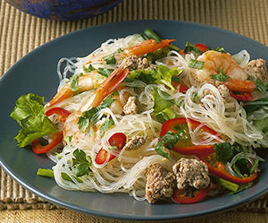

Tailändischer Glasnudelsalat mit Crevetten
5 von 6Glasnudeln 7 min in kaltem Wasser einweichen, danach 3 minuten kochen, mit kaltem Wasser abschrecken. Saft von zwei Limetten, einige Chillis, nach belieben Knoblauch, Thai-Frühlingszwiebeln, thailändischer Stangensellerie sowie einen Spritzer Fischsauce beigeben und etwas einziehn lassen. Die Crevetten scharf anbraten und darüber geben, mit Koriander servieren.
